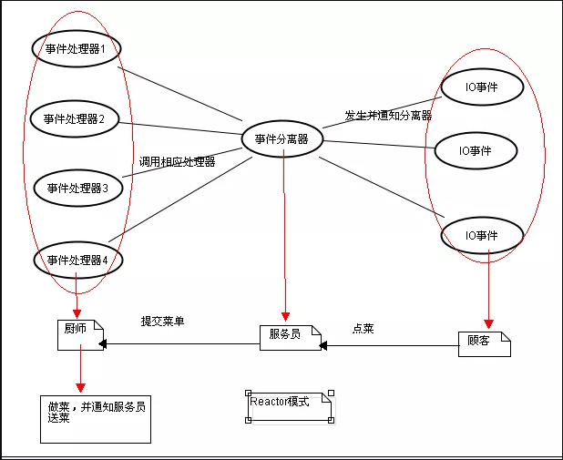
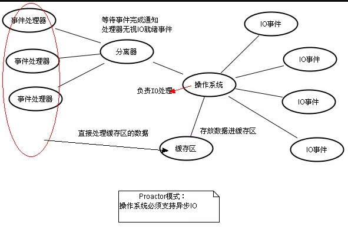

IO流的处理
1. IO的分类？
- IO按照POSIX标准可以分为同步IO以及异步IO两种，其中同步IO中最常用的是BIO（Blocking IO）和NIO（Non-Blocking IO）.
- 同步IO
- BIO：从程序的角度而言，BIO就是当发起IO的读或者写操作的时候，均为阻塞方式，只有当程序读取到了流或者将流写入之后才会释放资源。（
每个连接一个单独的线程） - NIO：是基于事件驱动思想的，实现上通常采用Reactor模式，从程序角度而言，当发起IO的读或写操作时，是非阻塞的。当socket有流可读或可写入Socket时，操作系统会相应的通知应用程序进行处理，应用程序在将流读取到缓冲区或写入操作系统。对于网络IO而言，主要有建立连接、流读取以及流写入三种事件。（
每个连接共用一个线程）
- BIO：从程序的角度而言，BIO就是当发起IO的读或者写操作的时候，均为阻塞方式，只有当程序读取到了流或者将流写入之后才会释放资源。（
- 异步IO
- AIO:也是基于事件驱动思想，实现上通常采用Proactor模式。从程序角度而言，和NIO不同，当进行读写操作的时候，只需直接调用read或者write方法即可。这两个方法均为异步的，对于读操作而言，当有流可以读取时，操作系统会将可读的流传入read方法的缓冲区，并通知应用程序。对于写操作而言，当操作系统将write方法传递的读写入完毕时，操作系统会主动通知应用程序。
- 同步IO
- 各个使用场景？
- BIO方式适用于连接数比较小且固定的架构，JDK1.4之前的唯一选择
- NIO方式适用于连接数目多并且比较短的架构，比如聊天服务器
- AIO方式适用于连接数目较多并且比较长的架构，比如相册服务器，充分调用OS参与并发操作，jdk1.7之后开始支持。
2. Reactor和Proactor模式
使用场景？
- Ractor适用于同步IO
- Proavtor适用于异步IO
Reactor模式

Proactor模式
